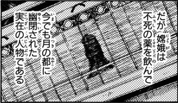

- Welcome to Touhou Wiki!
- Please register to edit. For assistance, check in with our Discord server or IRC channel.
Chang'e
Chang'e d͡ʑʲo̞ːɡ̃a̠ Chang-o, Jouga | |
|---|---|
|
 Chang'e as depicted in Silent Sinner in Blue
| |
| Species | |
| Abilities | |
| Occupation |
Prisoner, previously princess/noblewoman |
| Location | |
Appearances | |
| Official Games | |
| |
| Print Works | |
| |
Chang'e (嫦娥 Jouga) is a Lunarian and Goddess who drank the Hourai Elixir, for which she was imprisoned on the Moon in the Lunar Capital.
General Information[edit]
Chang'e is an enigmatic character. Not much is known about her, except that she lived on the Moon and was the master of the moon rabbits. She drank the Hourai Elixir and became immortal, but was imprisoned on the Moon for it. Today, the moon rabbits sing in unison when pounding mochi to atone for her sin of drinking the elixir.
It was unknown what happened to her until Legacy of Lunatic Kingdom, when it was revealed that Junko and Hecatia Lapislazuli had a grudge towards her and that they intended on invading the Lunar Capital to reach her whilst she is still in prison.
Background Information[edit]
She is highly based on the mythological Chang'e, who is the Chinese goddess of the Moon. In nearly every story, her husband Houyi acquires an elixir of immortality and comes home after an absence, only to discover that Chang'e had drunk it before she rises to the Moon, though the circumstances of her taking the elixir changes with each telling. The many different tellings also follow different backgrounds. In some versions, Chang'e drinks the elixir to prevent her despotic husband from gaining the power of immortality; and in others she is a selfish princess who drinks the elixir because she herself seeks power.
Name[edit]
Her known name is Chang'e (嫦娥), having the English translation use the more recognizable Chinese pinyin of her name; her Japanese romaji equivalent is Jouga. The second lunar invasion (the Chang'e program) shares the same name as her. Like Eirin Yagokoro, her real name is unknown and unpronounceable to earthlings.
The first kanji can mean "lady of eternity" (嫦) whilst the second kanji means "beautiful/elegant" (娥) (in both Chinese and Japanese). Usually, 嫦 cannot be used as a standalone character, but it is usually seen as an abbreviation of her name. On the other hand, the hanzi "嫦" was originally "姮" (heng) — "姮娥" (Héng'é) was revised to spell "嫦娥" (Cháng'é). "姮" means "lady of the circle/orbit/moon". This alteration was made in order to avoid sharing the hanzi 亘 (ancient spelling: 亙) of 恒 (ancient: "恆), which is the true name or taboo-for-his-highness name of Emperor Wen of Western Han Dynasty. It appears to us living present-days that it seems unreasonable to exchange two words of asimilar sounds. But in fact, the original use of 嫦 was vulgar/unofficial variant of 姮 and they were samely pronounced as "heng" (/ɦəŋ/), but the sound of 嫦 was shifted to 常 (Han-Era /ʒɪaŋ/, Present-Days /ʈ͡ʂʰɪaŋ/), which is very natural in hanzi culture.
According to official rules of pinyin romanising, an apostrophe is used before a syllable that starts with a vowel to avoid any ambiguity in pronunciation.
Relationships[edit]
Houyi[edit]
Houyi was Chang'e's husband, and also the one who killed Junko's son and shot down the suns, creating Junko and Hecatia's grudge. He was eventually killed by Junko. In Touhou, it is unknown which version of him exists: in one story, he is a loving husband who becomes helpless as Chang'e is forced to drink the elixir; in another, he is a despotic ruler who Chang'e is forced to stop by consuming the elixir in his place; in yet another, it is her to gives in to the elixir's temptation. They are sometimes known to represent the yin and yang.
Moon rabbits[edit]
Chang'e is the true master of all the moon rabbits. They pound mochi to atone for their master's sin of drinking the Hourai Elixir.[1] Although they are said to pound rice cakes, in reality they are attempting to create the Hourai Elixir.[2] Reisen Udongein Inaba also seems to serve under Chang'e as she refers to her as "Lady Chang'e" (嫦娥様), but it's unknown if Chang'e particularly knows her.
Junko & Hecatia[edit]
Junko has a grudge against Chang'e. This is because her husband, Houyi, killed Junko's son. Hecatia Lapislazuli hates Chang'e as well, because Houyi also shot down the suns taking away the light Hell needs to exist, as without strong light the darkness of Hell would also weaken. It is said that Hecatia's grudge against Chang'e is mainly due to Junko's influence. It is unknown to what extent Chang'e knows Junko, but she is at least aware of her existence.
Official Sources[edit]
| This page is part of Project Characters, a Touhou Wiki project that aims to write proper descriptions for all official characters of Touhou Project. Please keep the character page guidelines in mind when contributing. |
- ↑ Silent Sinner in Blue: Chapter 2
- ↑ Cage in Lunatic Runagate: Sixth Chapter